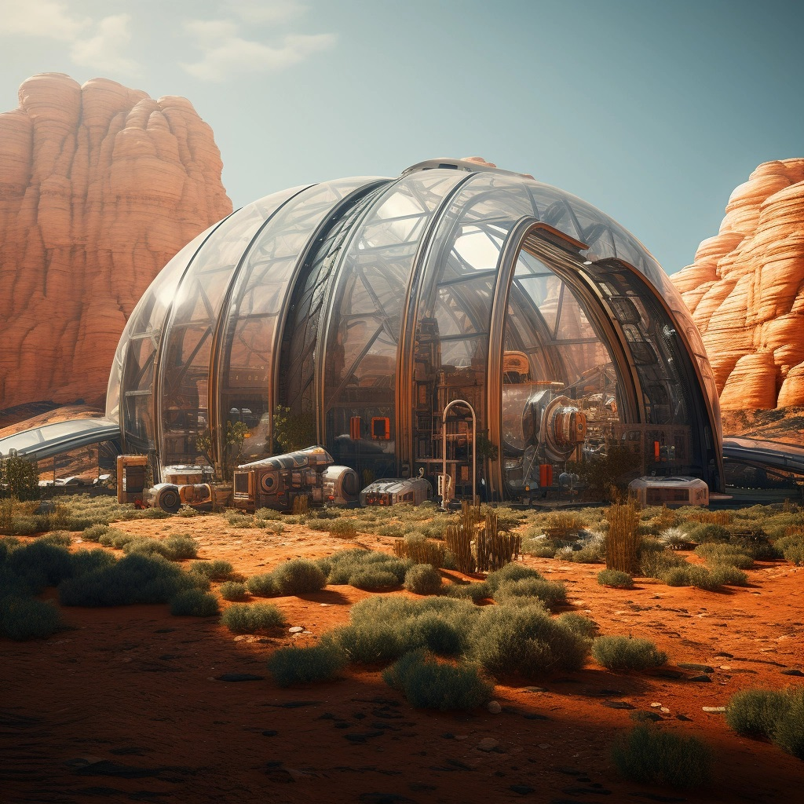
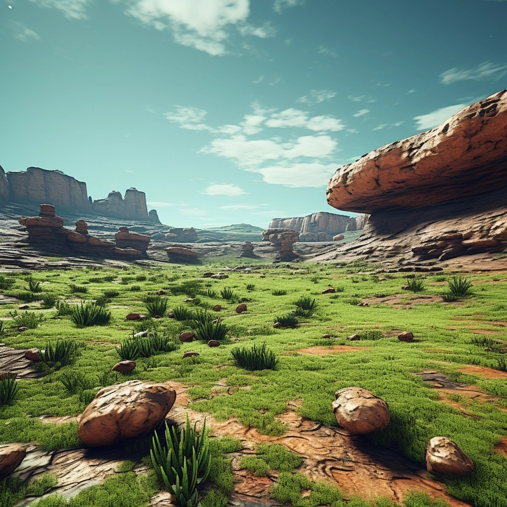

Marsin vesi on Marsin siirtokunnan tärkein resurssi. Ilman vettä ei ole elämää, eikä kasvihuonetta, eikä maanviljelyä. Siksi Marsin siirtokunta on kehittänyt erilaisia menetelmiä ja teknologioita veden hankkimiseksi, puhdistamiseksi ja kierrättämiseksi.
Marsin vedellä on kolme pääasiallista lähdettä: jää, ilma ja maaperä. Jokaisella lähteellä on omat etunsa ja haasteensa.
Marsin napojen ja korkeiden leveysasteiden alueilla on suuria määriä jäätä, joka koostuu pääasiassa vedestä ja hiilidioksidista. Jää on helpoin ja puhtain veden lähde, mutta se on myös kauimpana ja kylmimpänä. Siksi Marsin siirtokunta on rakentanut erityisiä jäänporaajia ja jääkuljettimia, jotka poraavat, sulattavat ja kuljettavat jäätä siirtokunnan säiliöihin.
Marsin ilmakehä on hyvin ohut ja kuiva, mutta se sisältää silti pienen määrän vesihöyryä. Ilma on kaikkialla ja lämmin, mutta se on myös likainen ja niukka. Siksi Marsin siirtokunta on asentanut erilaisia ilmankostuttimia ja ilmankerääjiä, jotka tiivistävät, keräävät ja suodattavat ilman vesihöyryn siirtokunnan säiliöihin.
Marsin maaperä on kuivaa ja karkeaa, mutta se sisältää myös piilevää vettä, joka on sitoutunut mineraaleihin ja suoloihin. Maaperä on lähellä ja runsasta, mutta se on myös vaikeaa ja saastunutta. Siksi Marsin siirtokunta on kehittänyt erilaisia maaperänkuivaimia ja maaperänuuttajia, jotka kuivaavat, uuttavat ja puhdistavat maaperän vedestä siirtokunnan säiliöihin.

Marsin vesi on Marsin siirtokunnan kallisarvoinen aarre. Se on käytetty viisaasti ja säästeliäästi. Se on myös kierrätetty tehokkaasti ja turvallisesti. Marsin siirtokunta on luonut oman vesikierron, joka yhdistää kaikki veden lähteet, kulutukset ja puhdistukset. Marsin siirtokunta on varmistanut, että sillä on aina riittävästi vettä elämiseen ja kasvamiseen.
